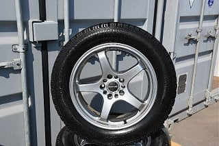
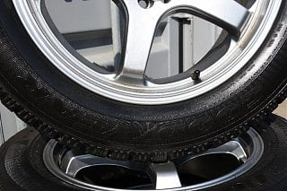
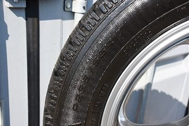
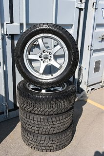
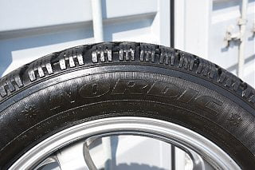
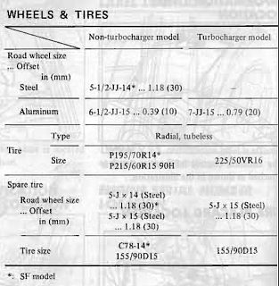

-
Hey guys, I'm looking for aftermarket wheels to put onto my Z, and I came across these wheels and I think they look really nice at a reasonable price too.
The problem is that I've been trying to read up on wheel fitment and all that but I don't understand anything past that I need 5*114.3 rims.
Could someone help me out and tell me if these will work? Preferably explain how this wheel stuff works too?
I have the stock turbine looking wheels on the car right now, and the tire on them are 205/55R16 94T
The description of the ad is as follows:
ENZOR RIMS with 235 55 17 225 50 17 Tires, 80% tread. 7X17 ET 44 OFFSET. Has a Dual Pattern.
By the way, are there any good wheel fit calculators for the Z? Something that can tell you if wheels will fit?
Thank you so much!     -
Short answer, no.
Long answer, if you use spacers to decrease the offset closer or past the offset on your stock wheels and possibly go to a lower profile tire, yes.
Unless you are getting these wheels for super cheap, you would be better off getting the correct offset to start with so you don't have to use spacer. If you are putting them on a 5-lug Z there are a bunch of wheels that will fit without using spacers.
Check out: http://www.thezenthusiast.com/wheelshow.html
It's broke out by wheel diameter and there's also info on what the stock offsets are for different years.
Also you may want to keep the overall diameter close to your stock wheel so your speedo stays accurate.
ADDED: Need to check the hole in the center of the wheel to see if it is Hub Centric. If the wheels aren't hub centric, you can get "rings" if the hole is bigger. If the hole is too small, then you will have to get them machined or the spacers machined. If you end up getting spacers, you want them to be hub centric also.Last edited by Dunkine; 01-28-2018, 05:11 PM. Reason: Hub Centric -
Oh, makes sense, so spacers like make your wheel move outwards? Because offset is how far from the "middle" of a wheel the mounting rim of the wheel is, correct?Originally posted by Dunkine View Post-
 #3.1Dunkine commentedRight, Zero offset would be the centerline/middle of the wheel. Positive offset is when the mounting is moved to the outside of the wheel & Negative offset moved towards the brakes. The wheels you are looking at are most likely for a front wheel drive car. You can use them by using spacers or you could get wheels with less positive offset.
#3.1Dunkine commentedRight, Zero offset would be the centerline/middle of the wheel. Positive offset is when the mounting is moved to the outside of the wheel & Negative offset moved towards the brakes. The wheels you are looking at are most likely for a front wheel drive car. You can use them by using spacers or you could get wheels with less positive offset.
The tire sizes are strange if all the wheels are 7" wide. They won't be the same height.
I bet the 235 55's will be around 2" taller than stock and the 225 50's should be 1" taller than stock. Lot's of space in the rear, the front is where you run into problems.
-
-
Update: I was looking through the owners manual, and it reads that my wheels are 7-JJ-15 .... 0.79 (20)What does that mean? Offset of 0.79? Is that very small?
I have attached an image of it! I have the Turbo model! -
86T: PCD-5x4.5(5x114.3); 16x7; e20 offset; 225/50-16
Review the link to wheelshow as suggested by Dunkine1986zxt w/ '86, 56k mile, na engine (turbo bits swapped), K&N intake, 3" CM Performance turbo-back exhaust, Eibachs, KYB shocks, Front Mount Intercooler (2.5" plumbing), Turbosmart MBC/9 lbs, recirculating BOV, ASCO plenum, dual fans, Maxima alt, Champion 3 row Radiator.
2013 Ford Taurus SHO Performance Package -
I did ahah I just don't get what the numbers mean ahahOriginally posted by 1986zxt View PostComment
-
86T: PCD-5x4.5(5x114.3); 16x7; e20 offset; 225/50-16
86 Turbo: Pitch Circle Diameter/Bolt Pattern/Bolt Circle) - 5 lug x 4.5" (PCD) then in metric (5 lug x 114.3mm) (PCD); 16" diameter rim x 7" wide rim; e or et (had to look this up, stands for Einpresstiefe = Offset) offset of 20mm; 225/50-16 is the size of the stock tires.
Something else to consider (forgot to mention, I'll add it to my reply above…) Hub Centric. This is the hole in the center of the wheel. If the wheels aren't hub centric, you can get "rings" if they are bigger. If the hole is too small, then you will have to get them machined or the spacers machined. If you end up getting spacers, you want them to be hub centric also.
-
-
Dunkine Thank you so much! Literally I've been googling and it just doesn't make sense and is cluttered in a bunch of other random information! I really appreciate it! Thank you!Comment
-
https://tiresize.com/calculator/
is what I use to compare tires. Doesn't take into account rim width, so it's not as accurate as it could be.


Copyright © 2006–. All rights reserved. Privacy Policy
Comment